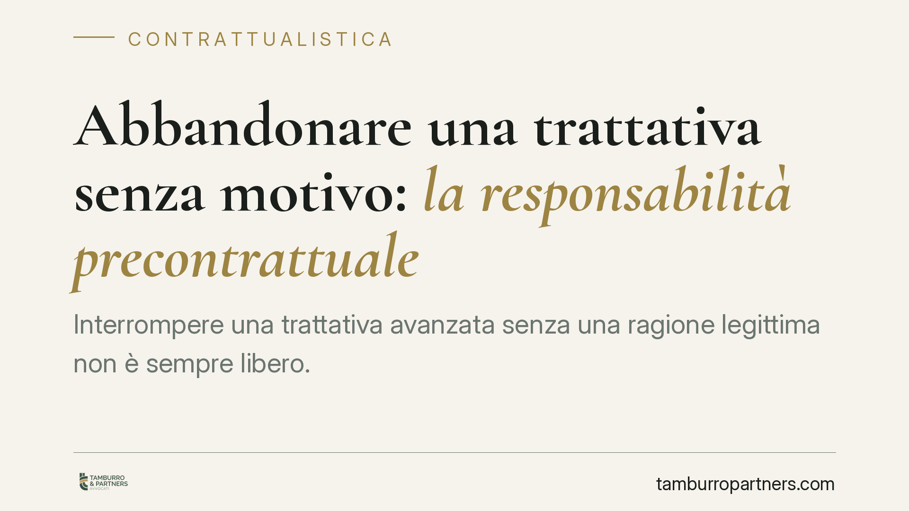

Abbandonare una trattativa senza motivo: la responsabilità precontrattuale
Interrompere una trattativa avanzata senza una ragione legittima non è sempre libero. Il Tribunale di Salerno ha ribadito che gli obblighi di buona fede precontrattuale valgono anche nella fase esecutiva del rapporto. Chi recede in modo ingiustificato rischia di risarcire i costi sostenuti dalla controparte e le occasioni perdute, ma non i guadagni sperati dal contratto mai concluso.

Il caso e perché conta
Una trattativa può durare settimane o mesi. Le parti si scambiano documenti, sostengono spese, rinunciano ad altre offerte confidando nell'accordo in arrivo. Poi una delle due si ritira, senza spiegazioni.
La domanda è semplice: chi abbandona il tavolo deve rispondere di qualcosa? La risposta, secondo il Tribunale di Salerno, dipende dallo stato della trattativa e dal comportamento tenuto. Non ogni recesso è illecito, ma un abbandono ingiustificato, quando l'altra parte aveva un ragionevole affidamento sulla conclusione del contratto, può fondare una responsabilità.
Inquadramento normativo
Il riferimento è l'articolo 1337 del codice civile: "Le parti, nello svolgimento delle trattative e nella formazione del contratto, devono comportarsi secondo buona fede". È la cosiddetta responsabilità precontrattuale, o *culpa in contrahendo*: una responsabilità che nasce prima ancora che il contratto esista.
Si affianca l'articolo 1338, che impone di comunicare alla controparte le cause di invalidità del contratto conosciute o conoscibili. Chi tace su un vizio che rende il contratto inefficace, causando un danno all'altro, ne risponde.
La buona fede di cui parla l'articolo 1337 non è un principio astratto. Significa lealtà, correttezza informativa e coerenza nel condurre le trattative. Recedere è lecito finché non si è generato nell'altra parte un affidamento qualificato sulla conclusione dell'affare. Superata quella soglia, il ritiro deve avere una causa seria.
La pronuncia salernitana aggiunge un elemento rilevante: gli obblighi di buona fede non si esauriscono con la firma. Continuano a operare anche nella fase di esecuzione del contratto, estendendo la portata della tutela oltre il momento della semplice trattativa.
Cosa si può chiedere e cosa no
Qui sta il punto più delicato. Il danno risarcibile nella responsabilità precontrattuale è il cosiddetto *interesse negativo*: ciò che la parte ha perso proprio per aver confidato inutilmente nella trattativa.
Rientrano quindi:
- le spese sostenute durante le trattative (consulenze, sopralluoghi, progettazioni, costi organizzativi);
- le occasioni perdute, cioè gli altri affari a cui la parte ha rinunciato per dedicarsi a quella trattativa.
Non rientra, invece, il guadagno atteso dal contratto mai concluso. È una distinzione decisiva: non si risarcisce ciò che si sarebbe ottenuto *se* il contratto fosse stato firmato, perché quel contratto non è mai nato. Si risarcisce solo il pregiudizio derivato dall'aver creduto, legittimamente, che nascesse.
È una differenza che pesa in termini economici. Chi agisce in giudizio confidando di recuperare il mancato utile dell'affare rischia di vedersi liquidare somme molto più contenute.
Implicazioni pratiche per le imprese
Per chi conduce trattative commerciali di un certo peso, la lezione è duplice.
Da un lato, chi si ritira deve valutare a che punto è arrivata la negoziazione. Più la trattativa è avanzata e più l'altra parte ha investito, più serve una ragione concreta per abbandonarla.
Dall'altro, chi subisce il ritiro deve essere in grado di documentare il proprio affidamento e i costi sostenuti. Senza prova delle spese e delle occasioni perdute, il risarcimento resta teorico.
Cosa fare in concreto
- Formalizzate le fasi della trattativa. Verbalizzate incontri, scambi e intese parziali: servono a fotografare il grado di avanzamento e l'affidamento maturato.
- Conservate le prove delle spese. Consulenze, sopralluoghi, preventivi e ore dedicate vanno documentati fin dall'inizio, non ricostruiti a posteriori.
- Motivate per iscritto il recesso. Se dovete ritirarvi, indicate una ragione seria e comunicatela con tempestività: riduce il rischio di contestazioni.
- Valutate lettere di intenti o clausole di break-up. Regolare in anticipo le conseguenze di un abbandono dà certezza a entrambe le parti.
- Chiedete una verifica legale prima di agire. Distinguere tra interesse negativo e utile atteso incide direttamente sull'esito di un'eventuale causa.
La buona fede nelle trattative non è cortesia: è un obbligo giuridico con conseguenze patrimoniali. Governarla per tempo, con documentazione e coerenza, è il modo più efficace per proteggersi.
Contributo informativo a cura di Tamburro & Partners - Avv. Giuseppe Tamburro. Non costituisce parere legale.
Ogni contratto ha il suo equilibrio.
Se vuoi una revisione delle clausole o una redazione su misura, scrivi allo studio. Ti rispondiamo entro un giorno lavorativo.